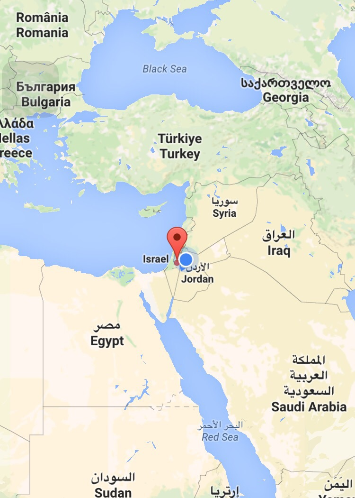
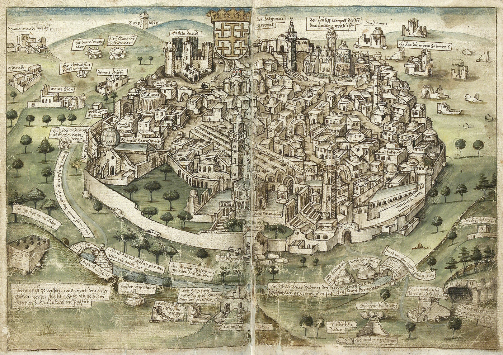
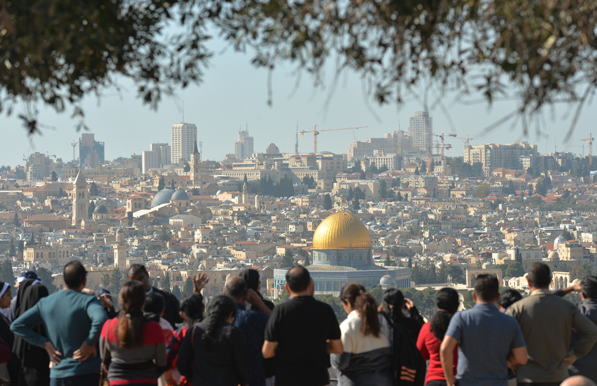
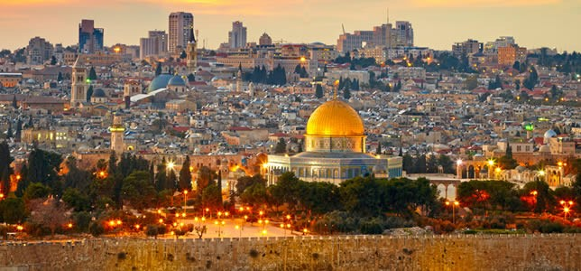

Agencia Turismo IStravel - Jerusalem
Agencia Turismo IStravel - Jerusalem
 Agencia Turismo IStravel - Jerusalem
Agencia Turismo IStravel - Jerusalem
Jerusalem, también conocida como Jerusalén en español, es una ciudad ubicada en la región montañosa de Judea, entre el mar Mediterráneo y el mar Muerto. Se encuentra en la intersección de Asia occidental y África del Norte, en una posición estratégica que ha sido codiciada y disputada a lo largo de la historia por diversas civilizaciones y culturas.
Históricamente, Jerusalem ha sido un centro espiritual y político para judíos, cristianos y musulmanes, lo que la convierte en una de las ciudades más sagradas del mundo. Para los judíos, es el lugar donde se encuentra el Templo de Salomón, el cual fue destruido por los babilonios y posteriormente reconstruido, y donde se cree que se ubica el Muro de los Lamentos, uno de los sitios de peregrinación más importantes del judaísmo. Para los cristianos, Jerusalem es el lugar de la crucifixión y la resurrección de Jesucristo, con lugares como la Iglesia del Santo Sepulcro y el Monte de los Olivos que son fundamentales en la narrativa cristiana. Y para los musulmanes, es el sitio del Domo de la Roca y la mezquita de Al-Aqsa, importantes lugares de peregrinación y adoración en el Islam.
Protegida por los Montes de Judea y bañada en piedra caliza, Jerusalén es una ciudad que despierta la curiosidad de la mente más indiferente. Pocos lugares del mundo pueden presumir de concentrar tal magnitud de arte, historia y tradición en un lugar tan especial como la Ciudad Vieja de Jerusalén, el origen de la Ciudad Santa.
Esta laberíntica red de calles sin planificación ninguna desprende una energía y un magnetismo difíciles de explicar. Paseando por la Ciudad Vieja es posible ver iglesias, mezquitas y sinagogas repartidas por los cuatro barrios de Jerusalén. Aquí los ojos del turista se cruzan con la mirada de los apresurados judíos ortodoxos, los alegres musulmanes del zoco y los solemnes peregrinos cristianos.
Jerusalén ha sido bautizada como la ciudad tres veces santa. Según la tradición cristiana, Jerusalén fue el escenario de la crucifixión, muerte y resurrección de Jesús. Para los musulmanes, fue aquí donde Mahoma ascendió a los cielos desde la majestuosa Cúpula de la Roca. Por su parte, los judíos veneran la Ciudad Santa por albergar el vestigio más importante del histórico Templo de Salomón: el Muro de las Lamentaciones.
Pero más allá de religión y fe, viajar a Jerusalén significa abrir los ojos, el oído y el corazón a nuevas sensaciones. Así entenderéis la mezcla de culturas tan especial que se respira en cada rincón de la ciudad, donde los pantalones vaqueros y las minifaldas se mezclan con los turbantes y las kipás en el más bonito de los cuadros: Jerusalén.
